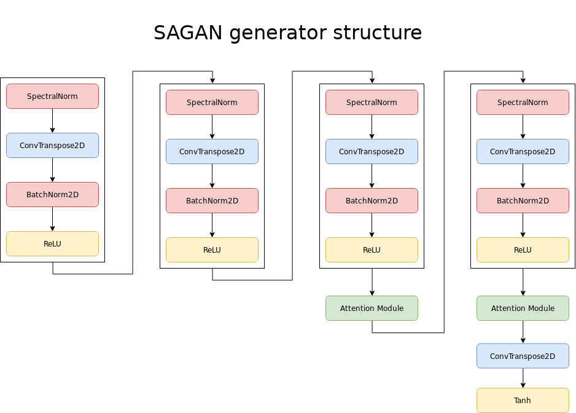
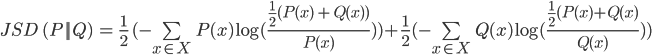
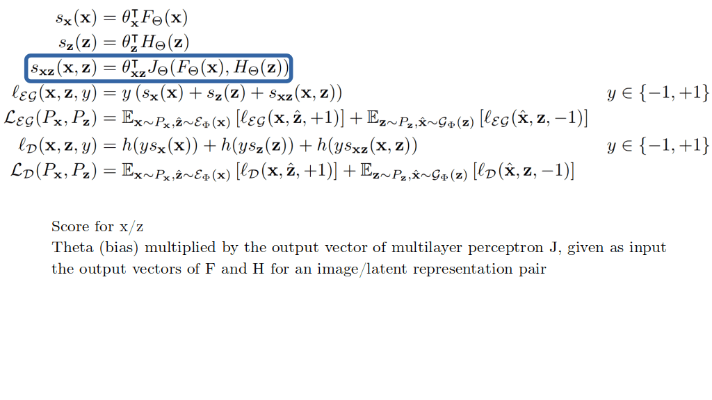
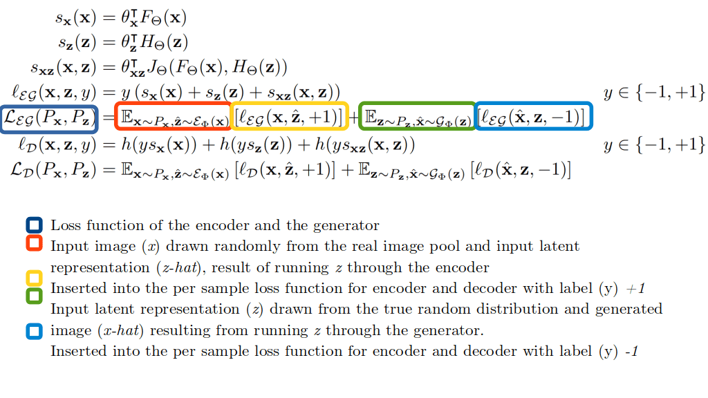
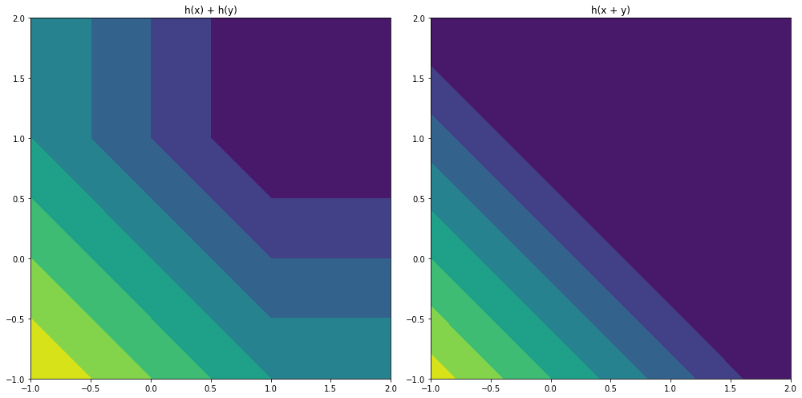

Introduction
Large Scale Adversarial Representation Learning, written by Jeff Donahue and Karen Simonyan, introduces BigBiGAN, a Generative Adversarial Network that includes representation learning methods in order to produce a high-quality self-supervised image classifier. Results from this classifier appear to match those from state of the art unsupervised methods and approach the performance of the AlexNet architecture which was trained in a fully supervised regime. In this post I intend to interpret the results of the paper, annotate different concepts for readers who may be less familiar with them and highlight the relevance of this work.
Why do I think this work is important?
Although the term is not mentioned in the paper, I think the paper as a whole shows us a great example of effective transfer learning. The networks were taught a specific task, which resulted in a structure that could be trivially adapted (even by means of a simple linear classifier in some cases) into a very functional network for another task. This emphasizes the notion of generalizability in neural networks, not only to novel samples for the same task, but also across domains.

I also appreciate the large number of samples and training details the authors have delivered in this paper, as well as the detailed ablation study. Showing what works is as important as showing what doesn’t work. Negative results allow the machine learning community to move forward more effectively by skipping methods that have failed to produce results in the past.
Generative Adversarial Networks
Generative Adversarial Networks (GANs) are a class of neural nets invented in 2014 by Ian Goodfellow. These networks aim to generate a distribution (generally an image) by means of an adversarial process. Two networks with separate tasks are created: A generator and a discriminator. The task of the discriminator is to distinguish between images that belong to the target dataset and those that don’t belong to the target dataset. The generator must try to render images that “fool” the discriminator. The generator uses the backpropagation signal from the discriminator to improve the generation quality.
This setup has yielded surprisingly high quality image generation networks like BigGAN, which produce very lifelike images. This paper aims to use the domain knowledge gained by these GANs to perform high quality representation learning, such that an image classifier can be trained in a self-supervised manner (that is, without labeled data).
Representation learning
Representation learning is a machine learning process whereby a neural network attempts to model the distribution of the dataset in order to provide features that describe instances sampled from that dataset. These features may then for example be used in another network or learning method to enable supervised learning.
Representation learning as a term is specifically used when it is a separate stage in the training process, mostly when unsupervised or self-supervised techniques are used to perform the representation learning stage. Normal CNNs like ResNet can also be thought of as performing representation learning, but the representation for each sample is explicitly directed by the class of each sample. This results in less “generic” representations. Still, even these networks are often pretrained on large datasets like ImageNet, while the representations they generate are used for transfer learning to a different domain.
Unsupervised or self-supervised?
The abstract of the paper notes a distinction between unsupervised and self-supervised learning. There are different sources that define this distinction, but the terminology does not appear to have crystalized as of yet.
Yann Lecun, who has been a long time proponent of unsupervised learning, recently updated his terminology by replacing unsupervised learning with self-supervised learning, stating:
Self-supervised learning uses way more supervisory signals than supervised learning, and enormously more than reinforcement learning. That's why calling it "unsupervised" is totally misleading. That's also why more knowledge about the structure of the world can be learned through self-supervised learning than from the other two paradigms: the data is unlimited, and amount of feedback provided by each example is huge.
Dr. Lecun continues to state that BERT (or see my notes) is self-supervised. The paper for BERT uses “unsupervised”.
Others see the two terms as separate. Dickey Singh notes the following:
Self-supervised learning is like unsupervised Learning because the system learns without using explicitly-provided labels. It is different from unsupervised learning because we are not learning the inherent structure of data. Self-supervised learning, unlike unsupervised learning, is not centered around clustering and grouping, dimensionality reduction, recommendation engines, density estimation, or anomaly detection.
On Quora, Shehroz Khan says that the self-supervised learning is a special case of unsupervised learning:
That is, self-supervised is an approach that use non-visual domain knowledge to help the supervised method of feature learning. One can argue that does not mean anything but a variant of (un)supervised learning. However, it is not semi-supervised learning, which is an established field.
The distinction, thus, remains debated, but the definition of self-supervised learning is clear. From Yann Lecun:
In self-supervised learning, the system learns to predict part of its input from other parts of it input. In other words a portion of the input is used as a supervisory signal to a predictor fed with the remaining portion of the input.
Neural network architecture
The authors use a variety of proven architectures and expand upon them. BigBiGAN uses the generator and discriminator from BigGAN, which is a state of the art Generative Adversarial Network. It introduces an encoder component derived from the BiGAN paper based on ResNet, with the best iterations using a variant called RevNet.
BigGAN
BigGAN is a state of the art, large scale GAN that is able to produce high quality images with exquisite detail. Images can be generated at resolutions from 128x128 to 512x512, and these resulting images score very high on the Inception Score metric.

BigGAN was picked as a GAN structure because of this performance. It seems intuitive that a neural network that is capable of modeling the dataset with such detail would have a high level of understanding on that dataset. This should provide the encoder with a high quality signal to train off, as opposed to older, less capable vanilla GAN used in the 2016 BiGAN paper.
Structure
The BigGAN architecture used in BiBigGAN outputs images at 128x128. A 256x256 version was tried and performed better, but was too slow to train for the resulting improvements in score. Progressive growing, which previously yielded great results for human face generation, is not used for this GAN. The overall architecture is a modified version of SAGAN, which uses Self-Attention modules. These modules are similar to the ones used in the Transformer architecture for language modeling networks. Among other changes, BigGAN adds more modules for larger image generation and inserts the latent representation piece by piece in each section of the network.
BiBigGAN improves upon the BigGAN architecture by adding two extra components to the Discriminator: H and J. These are both 8 layer multilayer perceptrons with skip connections as seen in the ResNet architecture. All the layers are 2048 neurons wide. These components expose the discriminator to the latent representation of an image (either the input latent vector or a vector generated by the encoder) and allow the discriminator to combine the image representation and the latent representation.
Encoder
The encoder is a neural network that takes an image as an input and generates a latent representation for that image. In a sense, it performs the exact opposite function of the GAN, which takes a latent representation and generates an image.
It has been shown in the BiGAN paper that with an optimal Generator, Discriminator and Encoder, the Jensen-Shannon divergence can reach a global optimum between the two joint distributions Pxùìî and Pùìñz. That is to say, it is possible that using the given objective, an optimal set of neural networks can create a perfect match between an encoder creating latent representations from images and a generator creating images from latent representations, such that ùìî(ùìñ(ùìî(x))) = ùìî(x).
Jensen-Shannon divergence
Jensen-Shannon divergence is a metric used to measure the similarity between two probability distributions. A probability distribution can either be continuous, which results in a function, or discrete. The latter can be used when all the outcomes in a probability distribution are a finite set (like tossing a coin [0.5, 0.5] or rolling a die [0.1666…, 0.1666…, 0.1666…, 0.1666…, 0.1666…, 0.1666…]. The Jensen-Shannon divergence is a smoother version of the Kullback-Leibler divergence metric. When fully expressed in a single formula it seems quite involved:
It can be expressed in verbose Python in the following matter.
import math P = [0.1, 0.2, 0.4, 0.1, 0.7] Q = [0.4, 0.1, 0.3, 0.1, 0.4] def kl_divergence(p, q): _sum = 0 for x in range(len(p)): _sum += p[x] * math.log(q[x] / p[x]) return _sum * -1 def get_m(p, q): m = [] for x in range(len(p)): m.append((p[x] + q[x]) / 2) return m def normalize(p): return [_p / sum(p) for _p in p] def get_jsd(p, q): p = normalize(p) q = normalize(q) m = get_m(p, q) return (kl_divergence(p, m) / 2) + (kl_divergence(q, m) / 2) JSD = get_jsd(P, Q)
Structure
The structure of the encoder was based initially on the ResNet architecture. An input resolution of 256x256 yields the best results. Most of the experimentation with the encoder involved increasing the number of neurons. ResNet-101, a deeper version of ResNet-50, yielded the poorest results of all the experiments in the ablation study. When the wider networks are considered, RevNet architectures overtake the original ResNet. The reason for this is not clear, as RevNets are said to perform very closely to ResNets for similar structures. Training times are similar, and thus do not appear to contribute to this phenomenon. RevNets do seem to use less parameters for a similar structure to a ResNet with the same number of neurons. The exact mechanism by which this could aid the network is not apparent.
The convolutional structure is followed up by a large, 4096 neuron wide MLP with 4 layers, similar to the ones used in the discriminator components. The convolutional output is globally average pooled before insertion into the MLP. This component of the encoding structure remains the same across all ablation experiments.
Explanation of the loss algebra
When I started out with reading machine learning literature, I found the mathematics included in the paper daunting. There are many symbols that can at times be unclear and are often left unidentified. Coming from a non-mathematical background, the process of deciphering the algebra does not come intuitively at first. A large block of these equations is present on page three, and while the accompanying text is surprisingly clear and explanatory, many may still choose to skip them. I have included a step-by-step annotation of every equation in that block, in the hope that this will help people starting out with interpreting algebra related to machine learning. Note: I am still a novice myself, so any corrections to this explanation are more than welcome.


A note on hinge functions
The authors state that for the discriminator loss two different approaches were tried. The first option was summing the losses and performing the hinge function over that sum. The second was taking the hinge function over each of the losses and summing them. The former was found to work significantly worse by the authors. While visualizing the outputs for 3 separate interacting values is difficult, we can simplify this problem to 2 values. This is illustrated in figure 6. When the hinge function is calculated once over the sum of the losses, we see that information is lost when the values diverge. This loss of information may be the reason for the poorer performance in that instance.
contourf function introduces banding into the visualization.Results
Encoder/Generator
One of the most interesting components of the results are those achieved by the encoder. That is, how effective was the encoder at translating an image sample into a latent representation that could be transformed into a similar image by the generator? Or more precisely: How close is ùìñ(ùìî(x))to x?
Both BiGAN and BigBiGAN produced images of this category. A simple visual inspection tells us that BigBiGAN definitely preserved more semantic information. In figure 7 below I have attempted to select some images that contain somewhat similar information. BigBiGAN clearly generates images that:
- Are recognizable
- Contain the relevant elements (a person and a tree, a flamingo etc)
- Contain these elements in similar poses
- Replicate colors (to some extent)
- And can deal with subjects that are partially cropped
These intuitions are confirmed by the Inception Score and Frechet Inception Distance, which are respectively higher and lower for the BigBiGAN, indicating better performance. IS shows an increase of approximately 18% and the FID is about a third lower for the best configurations. It should be noted that these scores are not nearly as high as BigGANs, however. The training time was not based on generator quality, but on the validation performance of the derived classifier.
Classifier
The ImageNet classifier for the initial ablation study was built by training a logistic regression classifier on the latent representation produced by the encoded (the features) with 10.000 images randomly sampled from the ImageNet dataset. It makes intuitive sense that a vector able to describe an image accurately to a generator would be of use to a classifying algorithm. This is confirmed by the classification accuracy, which tops out at 60% top-1 accuracy using a wide large RevNet architecture.
The linear classifier was further enhanced using Batch Normalization and the use of a CReLU activation. This yielded 61% top-1 accuracy and 81.9% top-5 classification accuracy on the full ImageNet validation set. The linear classifier was trained on the 10.000 images from the initial stage, which means that this approach was able to achieve results comparable to AlexNet with less than one 1% of the data. (AlexNet achieved 62.5% top-1 accuracy and 83% top-5 accuracy).
This GAN approach is on par with the state of the art in unsupervised (or self-supervised) techniques, specifically the Contrastive Predictive Coding technique which was developed in parallel with this work. The results from CPC appear to correspond to using 10% of the labelled data from the ImageNet training set, however (100 images per class, which would equal 100.000 images for the 1000 class challenge), which means that the GAN approach appears to be more data-efficient.
Conclusion
Large Scale Adversarial Representation Learning proposes an improved GAN architecture that yields both an impressive advance in image encoding, as well as a very efficient, state of the art feature learner for image classification. One applications for the encoder would be quickly generating initial latent states for GANs from existing images, which can later be finetuned when applied to a network like StyleGAN. Another is the more straightforward use: Pretraining a network for a difficult image classification task where little data labelled data is present, but many unlabeled samples can be found with relatively little effort. The medical domain is one of these areas, as gathering labeled data is labour intensive, requires the input from expensive experts and is fraught with privacy implications. I personally see BiBigGAN as a potentially very valuable part of the Data Scientist’s toolbelt.
References/Further reading
- Large Scale adversarial Representation Learning: https://arxiv.org/pdf/1907.02544
- Deep Residual Learning for Image Recognition: https://arxiv.org/pdf/1512.03385
- The Reversible Residual Network:Backpropagation Without Storing Activations: https://arxiv.org/pdf/1707.04585
- Large Scale GAN Training for High Fidelity Natural Image Synthesis: https://arxiv.org/abs/1809.11096
- ImageNet Classification with Deep Convolutional Neural Networks (AlexNet) https://papers.nips.cc/paper/4824-imagenet-classification-with-deep-convolutional-neural-networks.pdf